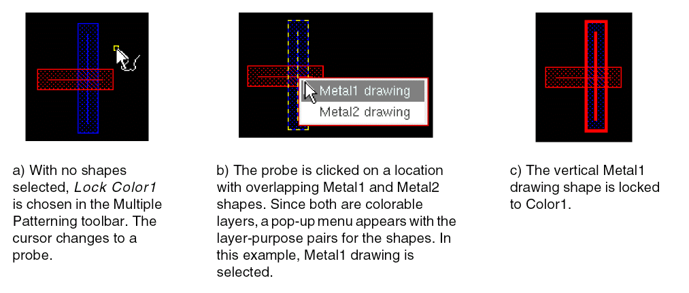

Post-Select Lock and Unlock
If no shapes were preselected, the cursor becomes a probe in the layout window, indicating that post-select mode is active. The status banner Cmd field at the bottom-right corner of the window shows the active command (Lock Current, Lock Color1, Lock Color2, Lock Color3, Lock Color4, or Unlock). Click shapes in the canvas to lock or unlock them.
-
Lock
Shapes at the current editing hierarchy level are locked by setting their color state. Shapes at a lower level of the hierarchy are set with a hierarchical color lock at the current level except when a lock is already set at the lower level. You can also prevent hierarchical color locking on sub-level shapes by setting theenableHCLCreationenvironment variable tonil. -
Unlock
Color attribute locks and hierarchical color locks at the current editing hierarchy level will be removed. If a shape is locked at a different level of the hierarchy, it will remain locked.
If visible and active shapes on more than one colorable layer exist under the probe, a pop-up menu appears. Choose the layer-purpose pair for the shape that you want locked or unlocked. The figure below shows an example of post-select locking in the layout.

Return to top